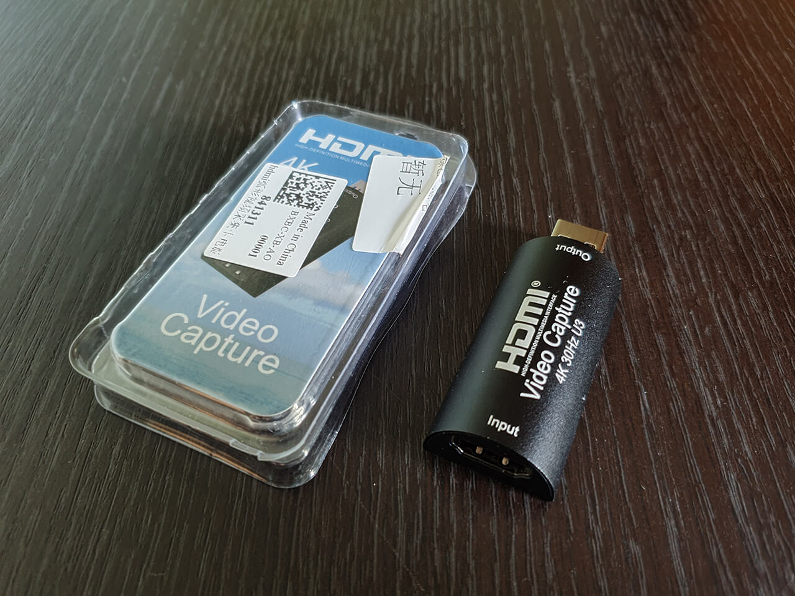

Как и в случае HDMI-сплиттера существует множество видов Usb-карт захвата как от самых бютжетных на чипе MS2109 (около 5$), так и значительно более дорогих. В блоге автора HyperHDR имеется статья в которой он описывает свой опыт использования различных карт захвата в разных ценовых категориях (ссылка).
Для себя я выбрал следующую модель карты захвата на базе нового чипа MS2130 (ссылка)

Для проекта многие пользователи используют более простую карту захвата на чипе MS2109, но в данном случае мне необходимо было иметь поддержку стандарта Usb 3.0 и полноценную поддержку 1080/60Hz. Указанная выше более дешевая карта данными характеристиками не обладала.
У карты захвата в качестве входа используется гнездо HDMI (тип "Мама"). Для подключения данной карты к HDMI сплиттеру необходимо использовать либо HDMI кабель, либо HDMI адаптер (тип "Папа-Папа"). Мне был более удобен второй вариант для которого был куплен соответствующий адаптер (ссылка)

Для подключения выхода с карты захвата к Raspberry Pi я приобрел короткий Usb 3.0 удлиннитель (ссылка)